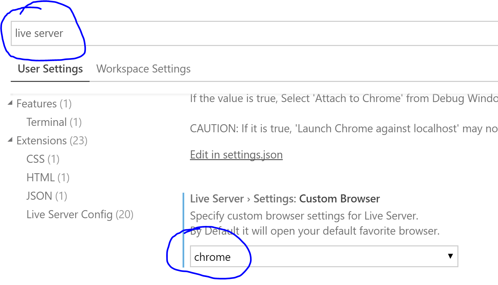
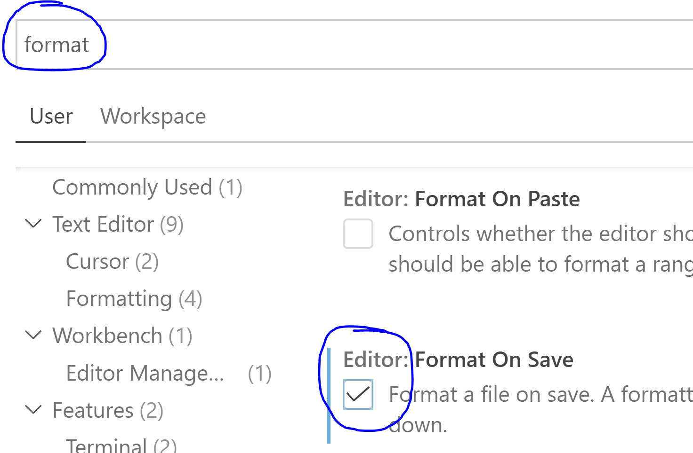
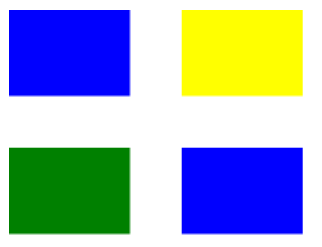
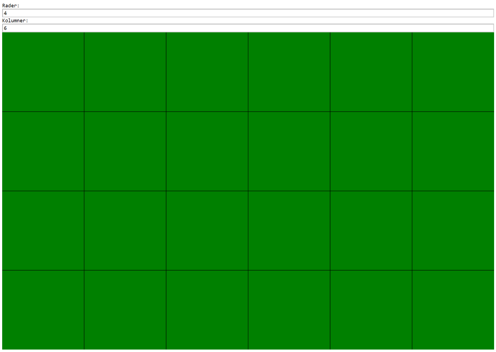
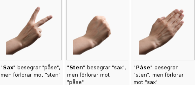

Allmänt
Ladda ner version 2.0.2 av BalderJS. (Med buggfix 2021-10-27)
Material
Advent of Code
Betygssteg
Att-kunna-lista
Teoretiskt
- Tolka given kod. Det vill säga ge förklaringar till vad koden gör.
- Identifiera, och rätta till, fel i given kod.
Praktiskt
- Rita i canvasen (cirklar, rektanglar, trianglar, linjer, text och bilder)
- Spara och utföra beräkningar med strängar, tal och booleska värden.
- Skapa animeringar med
setUpdate(). - Inmatning av data med
await input(). - Utmatning av data med
output(). - Använda
if- ochswitch-satser. - Använda
for- ochwhile-loopar. - Avbryta en loop med
break. - Använda arrayer med en och två dimensioner.
- Skriva, och anropa, funktioner som gör något och funktioner som returnerar något.
BalderJS-program med StackBlitz
Ändra något i koden till vänster, till exempel färgen eller radien.
BalderJS-program med VS Code
Första gången
A) Installera Visual Studio Code. (Om du inte redan gjort det...)
B) Installera Node.js. Välj Windows Installer (.msi), 64-bit. Då filen laddats ner så starta den (dubbelklicka).
C) Installera TypeScript-kompilatorn genom att:
- Öppna VS Code.
- Välj View - Terminal för att visa terminalfönstret.
- Skriv där kommandot (avsluta med Enter): npm install -g typescript
- Kontrollera att installationen görs, det tar ca 10 sekunder.
D) Skriv också detta kommando i terminalfönstret (avsluta med Enter): Set-ExecutionPolicy -ExecutionPolicy Unrestricted -Scope CurrentUser
E) Installera tillägget Live Server. Klicka på den gröna Install-knappen.
F) Man kan bestämma vilken webbläsare som ska öppnas med inställningen: File - Preferences - Settings:

Alla moderna webbläsare, till exempel Chrome och Firefox funkar bra.
G) Installera också tillägget Blade
Runner.
H) En del tillägg kräver att VS Code startas om, så gör det.
I) Gör denna inställning: File - Preferences - Settings:

J) Ladda ner den komprimerade filen balder202-app.zip. Högerklicka
sedan på den och välj alternativet Extrahera alla. Då skapas en mapp
balder-app som kan vara mall för dina projekt:
Varje gång
A) Inifrån VS Code så väljer du File - Open Folder och väljer där den mapp som du vill jobba med.
B) Om du vill göra ett nytt program så ta först en kopia av någon mapp och ge den ett beskrivande namn:
- Markera den mapp du vill kopiera (till exempel balder-app).
- Kopiera med Ctrl+C.
- Klistra in med Ctrl+V.
- Byt till ett mer beskrivande namn på mappen.
C) Markera den mapp du vill jobba med och välj sedan Select Folder. (Du behöver alltså inte klicka dig in i själva mappen.)
D) Visa filen app.ts. Stäng gärna fönstret med alla filer så får du bättre plats med koden.
E) Tryck på Go Live-ikonen (längst ner i fönstret). Då öppnas en webbläsarflik som sedan uppdateras varje gång din fil sparas.
F) Skriv kod i app.ts - spara - och se resultatet i webbläsaren.
Tips:
- Visa editorn till vänster och webbläsaren till höger på skärmen så kan du samtidigt se kod o resultat.
- Starta Live Server med kortkommandot Alt+L Alt+O.
- Spara med kortkommandot Ctrl+S.
BalderJS API
Tips o trix med VS Code
Vad kallas tecknen?
Uppgifter
Input, text, siffror och selektioner
-
Skriv ett program som tar ett personnummer (de 4 sista siffrorna är oviktiga) som input och sedan skriver ut hur gammal personen är.
Tips: Använd slice eller substring för att plocka ut år, månad och dag ut personnumret.
Exempel:
Personnummer: 101010
Du är 11 år
Spara lösningen om du ska göra funktionsuppgifterna längst ner i repetitionen.
-
Skriv ett program som tar hastighetsgräns på en väg och din nuvarande hastighet som input.
Programmet ska säga åt dig om du kör för snabbt, lagom hastighet eller för långsamt.
Om du kör för långsamt bör bero på vilken hastighetsgräns du skrivit in.
Arrayer och iterationer
-
Skapa ett program som innehåller en array med tal.
Använd en loop för att addera alla tal i arrayen med talet som kommer efter i arrayen.
Det sista talet behöver inte adderas med något.
Skriv gärna ditt program så att arrayen uppdateras med de nya talen eller att talen läggs till i en ny array.
Om din array ser ut såhär [5, 4, 3, 1, 5] ska du få följande output:
[9, 7, 4, 6, 5]
-
Skriv en tvådimensionell array som innehåller olika färger.
Använd två loopar för att rita ut rektanglar bredvid och under varandra med färgerna från din array.
Exempelarray: [["blue", "yellow"], ["green", "blue"]]
Spara lösningen om du ska göra funktionsuppgifterna nedan.
Funktioner
-
I första repetitionsuppgiften skrev du ett program som räknade ut en ålder.
Gör om det till en funktion som ger tillbaka (returnerar) åldern. Funktionen ska ta personnumret som argument.
Använd sedan den funktionen för att räkna ut åldern på ett antal personer, du behöver inte ta inputs.
Räkna sedan ut summan av allas åldrar. -
Använd din lösning på uppgiften som använde en array med färger för att rita ut rektanglar.
Gör om det till en funktion som tar ett startvärde på x och y samt en array med färger som argument.
Använd sedan funktionen för att rita ut olika grupper av rektanglar på skärmen.
Prisdialog (Provuppgift 2020-12-16)
En uppgift som testar betygen E-D.
Spara som prisdialog. Skriv snygg och lättläst kod, med bra variabelnamn och korrekta indrag.
Skriv ett program som för en dialog som nedan.
Du får utgå från att användaren ger rimliga indata. Programmet får krascha om så inte är fallet.
Du får 2 kronor tillbaka.
Jo, jag vet att det inte är så vanligt längre att betala med "riktiga pengar", mynt och sedlar. Men i denna uppgift så låtsas vi göra det!
Sista raden ska, vid lämpliga tillfällen, bytas mot
Jämna pengar!
eller
Det saknas pengar!
(Uttrycket "jämna pengar" innebär att man betalat precis det varorna kostat.)
Ladda upp mappen i din codescan-mapp på skelamp.
Rutnät (Provuppgift 2020-12-16)
En uppgift som testar betygen E-C.
Spara som rutnat. Skriv snygg och lättläst kod, med bra variabelnamn och korrekta indrag.
Skriv ett program som kan rita upp ett rutnät i canvasen med det antal rutor användaren önskar.
Du får utgå från att användaren ger rimliga indata. Programmet får krascha om så inte är fallet.
Resultatet ska likna det nedan. Rutnätet ska fylla upp hela canvasen.

Tips 1: Konstanterna W och H ger bredd respektive höjd på canvasen.
Tips 2: Anropet resetCanvas() anpassar canvasen efter skärmen. Gör det efter
inmatningarna.
Ladda upp mappen i din codescan-mapp på skelamp.
Sten-sax-påse (Provuppgift 2020-12-16)
En uppgift som testar betygen E-A.
Spara som stensaxpase. Skriv snygg och lättläst kod, med bra variabelnamn och korrekta indrag.
Skapa ett program med vilket man kan spela sten-sax-påse mot datorn.

Önskvärd funktionalitet:
- Du får själv bestämma över designen, men spelaren ska på ett enkelt och tydligt sätt kunna
välja mellan sten, sax eller påse.
- Man ska kunna se vad datorn och spelaren valt.
- Man ska kunna se vem, datorn eller spelaren, som vann omgången eller om det blev
oavgjort.
- Man ska kunna spela flera omgångar och se ställningen, det vill säga hur många gånger som
dator och spelare
vunnit.
- Man ska också kunna se resultaten från tidigare omgångar och hur ställningen har förändrats
under
spelet. (typ Spelare: sax - Dator: sten, Dator vann, 0 - 1)
- Man ska, i förväg, kunna bestämma om man spelar bäst av tre, fem eller sju omgångar.
(Motsvarar först till två,
tre eller fyra vinster.)
- Då någon vunnit spelet så ska detta meddelas.
- Man ska få chansen att påbörja ett nytt spel.
Tips:
- Man kan använda bilder och sedan känna av då man klickar på dessa (kanske med en
hitbox).
- Använd slumptal för datorns val. Slumpa ett tal 0 - 2. Låt 0 motsvara sten, 1 sax och 2
påse.
- Om något känns oklart i uppgiften så gör en egen tolkning av hur du tycker det borde fungera.
Ladda upp mappen i din codescan-mapp på skelamp.
Öppet hus 2021-11-13
Skapa ett spel, eller annat program, som på något sätt gör så att Baldergymnasiet/Teknikprogrammet/INF-inriktningen framstår som det finaste, bästa och det helt självklara alternativet för de åk9-elever som råkar se sidan.
{kind=link}